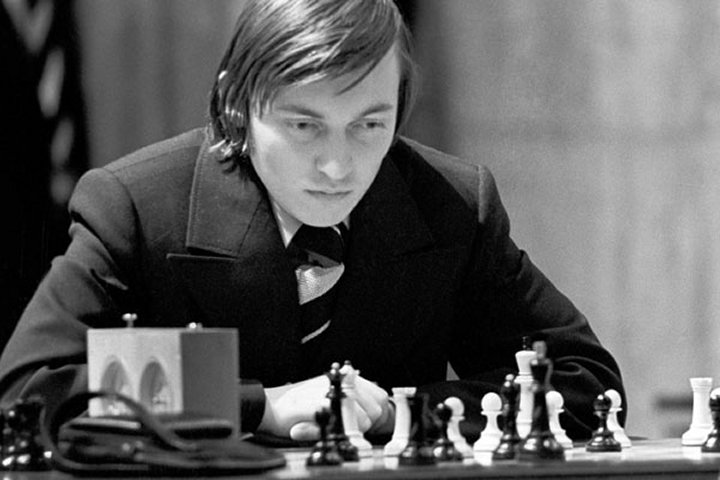
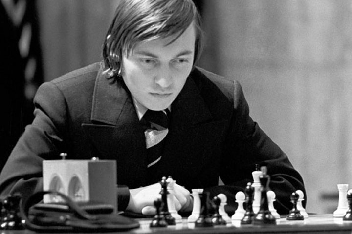
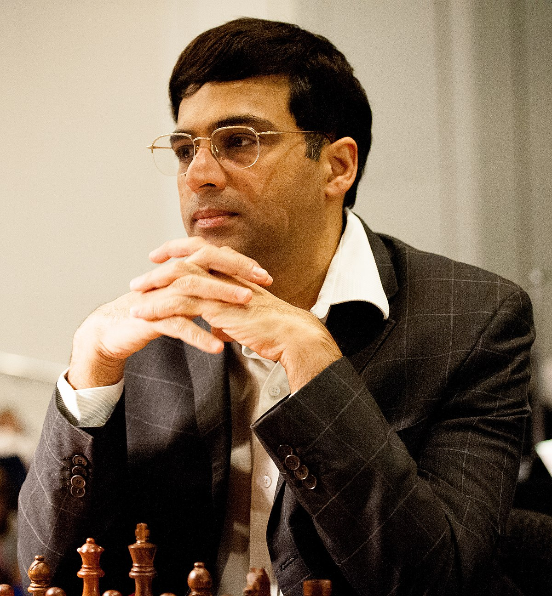
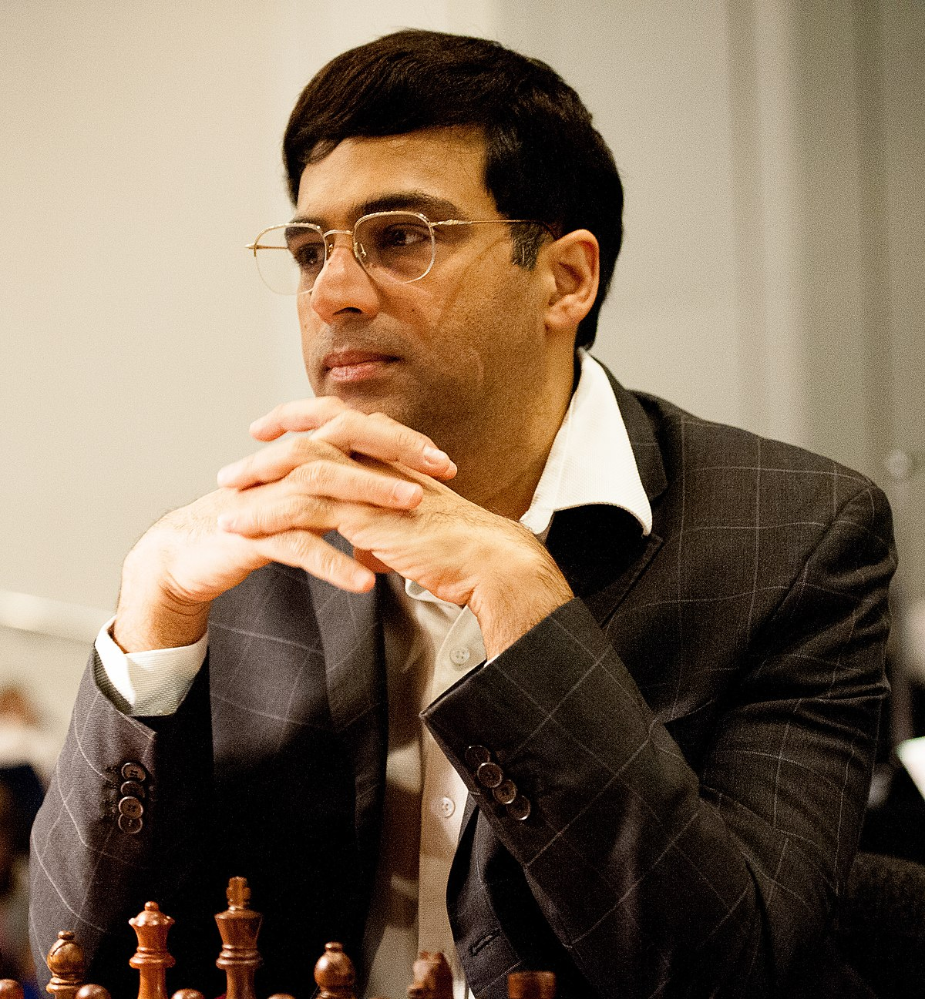

Ez az oldal haladó sakkozóknak készült, akik az alapismereteken túl szeretnének mélyebb tudást elsajátítani a sakk iránt.
Egy sakkjátszmát három részre lehet bontani: nyitásokra, középjátékra és végjátékra. Minháromhoz más taktikák szükségesek,
ezért ezeket külön vettem. A bemutatott stratégiák csak a jéghegy csúcsát jelentik, számtalan más módszerrel lehet megismerkedni.
Ez az oldal egy kiindulópontot jelent azoknak, akik opportunista lépések helyett a játék belső mechanikájában mélyülnének el.
Természetesen nem, hiszen a sakktaktikákról szóló dokumentáció mennyisége majdnem végtelen.
Ezen az oldalon csupán a híresebbek közül emelek ki párat, amelyeket hasznos tudni és nem
olyan nehéz megjegyezni. Az itt található taktikákkal könnyen felülkerekedhetünk a kezdő
játékosokon, amellett, hogy stratégiai szempontból tudjuk saját játékunk erősségeit és gyengeségeit
elemezni a játék három szakaszában.
Nincsen megegyezés arról, hogy a játék egyes szakaszai mikortól kezdődnek és mikortól végződnek.
Sokan a bástyák összekapcsolását a megnyitás végének értelmezik, ez az a pont, amikor a két bástya
kölcsönösen védi egymást, jellemzően sáncolás után. A végjáték kezdetét pedig néhányan a királynő(k)
eltávolításaként értelmezik, amellyel a legnagyobb probléma az, hogy ez viszonylag a játék elején is
megtörténhet.
A sakktudás további bővítésére számos weboldal platformot nyújt. A leghíresebb jelenleg a
chess.com weboldal, amely az utóbbi időben lényegében
monopóliumra tett szert az online sakkjátszmák lebonyolításában, de a prémium funkciók beszerzésével
nagy tudásanyaghoz kaphatunk hozzáférést. Minden közösségi média oldalon is találhatunk olyan
tartalomgyártókat, akiknek a legfőbb célja a nézők/olvasók edukálása a sakk terén.


 

 
